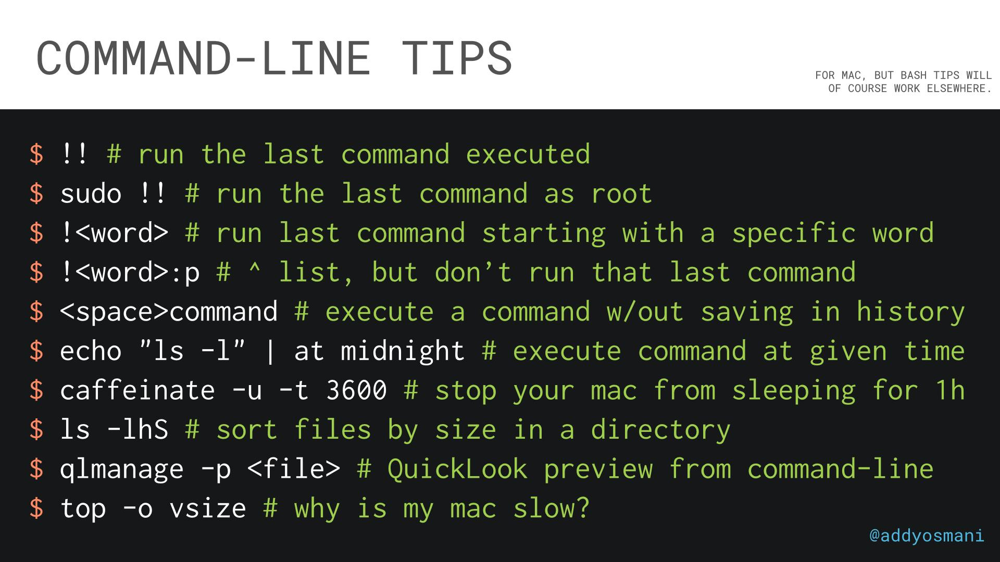

Linux and SSH¶
- Introduction
- RHEL
- Rocky Linux
- VIM
- Neovim
- SSH
- OpenSSL
- Linux Blogs
- Spanish Linux Blogs
- Youtube
- Linux Commands and Tools
- Makefiles
- Guestfish
- BusyBox
- Bash
- Questions and Answers
- Automation. Bash VS Python VS JavaScript
- Zsh
- ZX
- bpftrace
- Linux processes
- Linux Memory
- KVM
- Linux and Kubernetes
- Linux Libraries
- Linux Networking
- Networking Protocols
- Linux Hardening Security
- Images
- Videos
- Tweets
Introduction¶
RHEL¶
- infoworld.com: Red Hat’s crime against CentOS In the beginning, no one expected to get Red Hat Enterprise Linux for free. The end of CentOS as a free drop-in replacement is no cause for outrage.
- arstechnica.com: CentOS is gone—but RHEL is now free for up to 16 production servers RHEL is now free for dev teams, and it's even free in production for up to 16 systems.
- cyberciti.biz: Red Hat introduces new no-cost RHEL option
- enterpriseai.news: Red Hat’s Disruption of CentOS Unleashes Storm of Dissent
- arstechnica.com: Why Red Hat killed CentOS—a CentOS board member speaks "The CentOS Board doesn't get to decide what Red Hat engineering teams do."
- zdnet.com: Red Hat introduces free RHEL for open-source, non-profit organizations Some CentOS users still aren't happy, but Red Hat is keeping its promise to open-source organizations that they'll have access to a free version of RHEL.
- genbeta.com: Red Hat Enterprise Linux lanza una versión a bajo costo para llegar a más público de sectores de investigación y académico
- makeuseof.com: The 4 Best RHEL-Based Alternatives to CentOS Now that CentOS is gone, you should make a switch to some other OS. Check out these four RHEL-based CentOS alternatives.
- centos.org: Comparing Centos Linux and CentOS Stream The CentOS Project produces two variants: CentOS Linux and CentOS Stream. They are alike in many ways. Here’s what sets them apart.
- makeuseof.com: The 7 Best Red Hat-Based Linux Distributions Unlike other Linux distros, RHEL isn't free to download. But you can still enjoy its benefits by installing these free RHEL-based Linux distributions.
Rocky Linux¶
- https://rockylinux.org
- cloudsavvyit.com: Is Rocky Linux the new CentOS?
- 9to5linux.com: CentOS Alternative Rocky Linux 8.5 Is Out Now with Secure Boot Support, Updated Components Derived from Red Hat Enterprise Linux 8.5, Rocky Linux 8.5 is here to introduce an important feature for the mass adoption of this CentOS Linux alternative, namely Secure Boot support.
VIM¶
- VimWiki
- redhat.com: Vim: Basic and intermediate commands
- thevaluable.dev: A Vim Guide for Advanced Users
- redhat.com: Recursive Vim macros: One step further into automating repetitive tasks Take Vim to the limit with recursive macros.
- openvim.com Interactive Vim tutorial for developers, sysadmins and Linux or Unix users.
- levelup.gitconnected.com: Vim: A How-To Guide Key Techniques with Vim for Faster Programming
Neovim¶
- neovim hyperextensible Vim-based text editor
- blog.ashwinchat.com: 9 Months of Full Time Neovim + Tmux
SSH¶
- gravitational.com: How to SSH Properly 🌟
- 19 Common SSH Commands In Linux With Examples
- commandlinefu.com/commands/matching/ssh
- Auto-SSH for Linux security
- Grant-Revoke-ssh-access To automate the process of granting ssh access to a group of servers instances
- How to use SSH properly and what is SSH Agent Forwarding
- How To Set up SSH Keys on a Linux / Unix System
- opensource.com: Bypass your Linux firewall with SSH over HTTP Remote work is here to stay; use this helpful open source solution to quickly connect and access all your devices from anywhere.
- Túneles SSH
- paepper.com: How to properly manage ssh keys for server access
- goteleport.com: SSH Certificates Security. SSH Access Hardening 🌟
- dev.to: How to Manage Multiple SSH Key Pairs
- cyberciti.biz: Top 20 OpenSSH Server Best Security Practices
- cyberciti.biz: How To Reuse SSH Connection To Speed Up Remote Login Process Using Multiplexing
- cyberciti.biz: OpenSSH Change a Passphrase With ssh-keygen command
- thenewstack.io: SSH Made Easy with SSH Agent and SSH Config
- linuxteck.com: 10 basic and most useful 'ssh' client commands in Linux
- cyberciti.biz: How to audit SSH server and client config on Linux/Unix OpenSSH is critical for Linux & Unix servers. However, misconfig can create issues. But fear not, you can audit the SSH server & client config easily. You don't have to be a security guru. New developers and sysadmins can look for security & other issues.
- ==iximiuz.com: A Visual Guide to SSH Tunnels: Local and Remote Port Forwarding== 🌟
OpenSSL¶
- redhat.com: 6 OpenSSL command options that every sysadmin should know Look beyond generating certificate signing requests and see how OpenSSL commands can display practical information about certificates.
- tecmint.com: Testssl.sh – Testing TLS/SSL Encryption Anywhere on Any Port
Linux Blogs¶
- The Linux Foundation
- tecmint.com 🌟
- nixCraft 🌟
- unixmen.com 🌟
- opensource.com 🌟
- linux.com 🌟
- linuxteck.com
- linoxide.com 🌟
- linuxjourney.com
- howtoforge.com
- tecadmin.net
- systemcodegeeks.com
- linuxnix.com
- learnitguide.net 🌟
- FOSS Force
- linuxhomenetworking.com
- linuxtoday.com
- unixetc.co.uk
- LWN.net
- Linux-tutorial.info
- The Lone Sysadmin
- LinuxLinks.com
- unixmages.com
- The Geek Stuff
- abarrak.gitbook.io: Linux SysOps Handbook 🌟 A study notes book for the common knowledge and tasks of a Linux system admin.
Spanish Linux Blogs¶
Youtube¶
Reddit¶
- reddit.com/r/linuxadmin Expanding Linux SysAdmin knowledge
Linux Commands and Tools¶
- watchman command: A File and Directory Watching Tool for Changes
- ip command: How to use IP Command in Linux with Examples
- curl command: Understanding the Hidden Powers of curl
- How To Use grep Command In Linux / UNIX 🌟
- tecmint.com: vtop – A Linux Process and Memory Activity Monitoring Tool
- tecmint.com: How to Install htop on CentOS 8
- cyberciti.biz: bpytop – Awesome Linux, macOS and FreeBSD resource monitor
- redhat.com: Save time at the command line with HTTPie instead of curl Automate testing endpoints, downloading files, and submitting forms with HTTPie.
- redhat.com: World domination with cgroups part 8: down and dirty with cgroup v2
- freecodecamp.org: RSync Examples – Rsync Options and How to Copy Files Over SSH
- tecmint.com: How to Control Systemd Services on Remote Linux Server
- redhat.com: Vim: Basic and intermediate commands
- redhat.com: Using ssh-keygen and sharing for key-based authentication in Linux SSH key-based authentication is helpful for both security and convenience. See how to generate and share keys.
- tecmint.com: How to Run Commands from Standard Input Using Tee and Xargs in Linux
- cyberciti.biz: How to configure pfSense as multi wan (DUAL WAN) load balance failover router
- nikhilism.com: Mystery Knowledge and Useful Tools
- developers.redhat.com: Linux commands for developers
- cyberciti.biz: BASH Shell Change The Color of Shell Prompt on Linux or UNIX
- cyberciti.biz: How to check TLS/SSL certificate expiration date from command-line
- igoroseledko.com: Parallel Rsync
- redhat.com: How to record your Linux terminal using asciinema Asciinema might be the application you've been looking for to demonstrate a skill or process that you want your colleagues or students to learn on-demand.
- redhat.com: 5 advanced rsync tips for Linux sysadmins Use rsync compression and checksums to better manage file synchronization.
- metacpan.org: a2p - Awk to Perl translator A2p takes an awk script specified on the command line (or from standard input) and produces a comparable perl script on the standard output.
- oilshell: Alternative shells
- Timezone Bullshit
- cyberciti.biz: How to check memory utilization in Linux
- tecmint.com: Different Ways to Use Column Command in Linux
- opensource.com: How to use the Linux grep command
- dnschecker.org 🌟
- tecmint.com: 10 Useful Commands to Collect System and Hardware Information in Linux
- cyberciti.biz: How To Find Largest Top 10 Files and Directories On Linux / UNIX / BSD
- cyberciti.biz: How to restart systemd without rebooting Linux when critical libraries installed
- cyberciti.biz: How to install ncdu on Linux / Unix to see disk usage
- cyberciti.biz: 21 Examples To Make Sure Unix / Linux Configuration Files Are Free From Syntax Errors
- opensource.com: Don't love diff? Use Meld instead Meld is a visual diff tool that makes it easier to compare and merge changes in files, directories, Git repos, and more.
- kalilinuxtutorials.com: Ldsview : Offline search tool for LDAP directory dumps in LDIF format
- medium: Useful Commands/Solutions
- CLImagic subscription
- cyberciti.biz: How to save terminal output to a file under Linux/Unix
- cyberciti.biz: ls* Commands Are Even More Useful Than You May Have Thought
- linuxtechlab.com: Search a file in Linux using Find & Locate command
- tecmint.com: How to Install and Configure ‘Collectd’ and ‘Collectd-Web’ to Monitor Server Resources in Linux
- sysadminxpert.com: How to watch real time TCP and UDP ports on Linux (netstat & ss) 🌟
- cyberciti.biz: How to flush Redis cache and delete everything using the CLI
- cyberciti.biz: How To: Linux Find Large Files in a Directory
- linuxteck.com: 15 basic curl command in Linux with practical examples
- linuxteck.com: 12 basic cat command in Linux with examples
- tecmint.com: How to Find Recent or Today’s Modified Files in Linux 🌟
- linuxshelltips.com: How to Use Netcat to Scan Open Ports in Linux 🌟
- Rclone 🌟🌟🌟 Rclone is a command line program to manage files on cloud storage. It is a feature rich alternative to cloud vendors' web storage interfaces. Over 40 cloud storage products support rclone including S3 object stores, business & consumer file storage services, as well as standard transfer protocols. Rclone has powerful cloud equivalents to the unix commands rsync, cp, mv, mount, ls, ncdu, tree, rm, and cat. Rclone's familiar syntax includes shell pipeline support, and --dry-run protection. It is used at the command line, in scripts or via its API.
- cyberciti.biz: 8 Tips to Solve Linux Hard Disk Problems: Like Disk Full Or Can’t Write to the Disk
- blog.ycrash.io: dmesg – Unix/Linux command, beginners introduction with examples
- opensource.com: Use XMLStarlet to parse XML in the Linux terminal Become an XML star with XMLStarlet, an XML toolkit for your terminal.
- redhat.com: 5 Linux commands I'm going to start using Five standard Linux commands that can make your life much easier.
- developers.redhat.com: Build your own RPM package with a sample Go program to simplify installing, updating, or removing a piece of software
- cyberciti.biz: How to copy and transfer files remotely on Linux using scp and rsync
- nginx.com: What Are Namespaces and cgroups, and How Do They Work? 🌟 Namespaces provide isolation of system resources, and cgroups allow for fine‑grained control and enforcement of limits for those resources. Containers are not the only way that you can use namespaces and cgroups. Namespaces and cgroup interfaces are built into the Linux kernel, which means that other applications can use them to provide separation and resource constraints.
- cyberciti.biz: How to check CPU temperature on Ubuntu Linux
- opensource.com: Check used disk space on Linux with du Find out how much disk space you're using with the Linux du command.
- linuxshelltips.com: How to Kill Running Linux Process on Particular Port
- freecodecamp.org: The Linux Command Handbook 🌟
- sysadminxpert.com: How to do Security Auditing of CentOS System Using Lynis Tool
- tecmint.com: 10 Practical Examples of Rsync Command in Linux
- tecmint.com: 10 Useful du (Disk Usage) Commands to Find Disk Usage of Files and Directories
- tecmint.com: What’s Difference Between Grep, Egrep and Fgrep in Linux?
- opensource.com: Check file status on Linux with the stat command
- tecmint.com: How to Kill Linux Process Using Kill, Pkill and Killall
- linuxteck.com: 13 Top command in Linux (Monitor Linux Server Processes) 🌟
- cyberciti.biz: How to use df command in Linux / Unix {with examples}
- commandlinefu.com: Compare directories via diff:
diff -rq dirA dirB - opensource.com: Check Java processes on Linux with the jps command With many processes running on a system, it's useful to have a quick way to identify only Java with the jps command.
- opensource.com: Get memory use statistics with this Linux command-line tool The smem command allows you to quickly view your web applications' memory use.
- redhat.com: 3 basic Linux group management commands every sysadmin should know How to use the groupadd, groupmod, and groupdel commands is essential knowledge for Linux sysadmins.
- itsfoss.com/exa exa: A Modern Replacement for the ls Command
- cyberciti.biz: diff Command Colorize Output On the Unix / Linux Command Line colordiff
- betterprogramming.pub: How to Use tmuxp to Manage Your tmux Session Take control of your tmux sessions.
- opensource.com: Linux tips for using cron to schedule tasks Schedule backups, file cleanups, and other tasks by using this simple yet powerful Linux command-line tool. Download our new cron cheat sheet.
- opensource.com: 7 handy tricks for using the Linux wget command Download files from the internet in your Linux terminal. Get the most out of the wget command with our new cheat sheet.
- makeuseof.com: The 6 Best Command Line Tools to Monitor Linux Performance in the Terminal Want to track and debug Linux System resources, storage, and network-related problems? Get started with the best Linux performance monitoring tools.
- opensource.com: 4 Linux tools to erase your data Erase data from your hard disk drive with these open source tools.
- ==redhat.com: 20 one-line Linux commands to add to your toolbox== Every Linux user has a favorite single-line command. Here are the 20 Linux commands we can't live without.
- termshark A terminal UI for tshark, inspired by Wireshark
- baeldung.com: Maximum Number of Threads Per Process in Linux
- opensource.com: Record your terminal session with Asciinema
- redhat.com: 5 scripts for getting started with the Nmap Scripting Engine The NSE boosts Nmap's power by adding scripting capabilities (custom or community-created) to the network scanning tool.
- redhat.com: Linux troubleshooting commands: 4 tools for DNS name resolution problems Find out what's stopping you from accessing a server, printer, or another network resource with these four Linux troubleshooting commands.
- ==jvns.ca: A list of new(ish) command line tools | Julia Evans==
- itsfoss.com: 5 htop Alternatives to Enhance Your Linux System Monitoring Experience
- dev.to: 50 Linux Commands every developer NEED to know with example
- blog.devgenius.io: DevOps in Linux — Systemd Introduction
- difftastic.wilfred.me.uk Difftastic is a CLI diff tool that compares files based on their syntax, not line-by-line. Difftastic produces accurate diffs that are easier for humans to read.
- digitalocean.com: How To Use Journalctl to View and Manipulate Systemd Logs 🌟
- github.com/curl/wcurl 🌟 a simple wrapper around curl to easily download files
Makefiles¶
- makefiletutorial.com 🌟 Learn Makefiles With the tastiest examples
Guestfish¶
- Guestfish
- redhat.com: How to customize VM and cloud images with guestfish Need to tweak your cloud and virtual machine images to comply with company policies or other requirements? Give guestfish a try.
BusyBox¶
- busybox.net BusyBox: The Swiss Army Knife of Embedded Linux
- genbeta.com: BusyBox, el ejecutable que agrupa casi 200 utilidades Unix de línea de comandos (y que puedes usar también en Windows o Android)
Bash¶
- igoroseledko.com: Checking Multiple Variables in Bash
- Introduction to Bash Scripting Interactive training
- datafix.com.au: BASHing data - Data ops on the Linux command line 🌟
- medium: How to trigger an action at the end of the Shell/Bash script Using Bash/Shell trap, a built-in command to define any action to be executed before exiting the Bash or Shell script. You can define multiple actions and per signal.
- redhat.com: Bash scripting: How to read data from text files Here's how to extract data from a text file such as reading in a list of servers to test connectivity to them.
- pement.org: Over 100 sed one-liners
- github: Safe ways to do things in bash
- rexegg.com: Regex Syntax Tricks
- pement.org: Handy one-line scripts for AWK
- robertmuth.blogspot.com: Better Bash Scripting in 15 Minutes
- cyberciti.biz: How To Bash Shell Find Out If a Variable Is Empty Or Not
- Bash Pitfalls 🌟
- cyberciti.biz: Bash For Loop Examples
- opensource.com: Parsing config files with Bash Separating config files from code enables anyone to change their configurations without any special programming skills.
- cloudsavvyit.com: How to Use Multi-Threaded Processing in Bash Scripts
- opensource.com: How to include options in your Bash shell scripts
- bash.cyberciti.biz Wiki 🌟
- redhat.com: Audit user accounts for never-expiring passwords with a Bash script Non-expiring passwords might violate your organization's policies, so use this basic Bash script to quickly pick them out.
- thenewstack.io: An Introduction to AWK
- cyberciti.biz: How to repeat a character ‘n’ times in Bash
- redhat.com: 2 Bash commands to change strings in multiple files at once Search and replace text in several files simultaneously, right from the Linux terminal, to gain efficiency and minimize mistakes.
- cyberciti.biz: Bash Read Comma Separated CSV File on Linux / Unix
- fedoramagazine.org: Bash Shell Scripting for beginners (Part 1)
- igoroseledko.com: Awk & sed Snippets for SysAdmins
- dev.to: Writing Bash Scripts Like A Pro - Part 1 - Styling Guide
- linuxhandbook.com: Unusual Ways to Use Variables Inside Bash Scripts
- opensource.com: An introduction to programming with Bash (eBook)
- pythonspeed.com: Please stop writing shell scripts
- linuxshelltips.com: What’s the Difference Between ${} and $() in Bash
- medium.com/kubehub: A Series on Bash Scripting
- levelup.gitconnected.com: Start Your Scripting Journey Today | Bash Script — Part 1 Everything You Need to Know to Write Bash Scripts
- medium.com: Shell Scripting for DevOps with Examples
- levelup.gitconnected.com: 5 Bash String Manipulation Methods That Help Every Developer Process strings productively in your automation scripts with these syntaxes
- piyushverma.hashnode.dev: Basic Linux Shell Scripting for DevOps Engineers
- gnu.org/software/parallel GNU parallel is a shell tool for executing jobs in parallel using one or more computers. A job can be a single command or a small script that has to be run for each of the lines in the input. The typical input is a list of files, a list of hosts, a list of users, a list of URLs, or a list of tables. A job can also be a command that reads from a pipe. GNU parallel can then split the input and pipe it into commands in parallel.
- ==youtube: Bash for Beginners== Bash is considered a universal language when it comes to cloud computing and programming. Many languages support Bash commands to pass data and information and when it comes to the Cloud, all platforms support using it to interact with your environment.
Questions and Answers¶
- redhat.com: 5 questions to ask during your next sysadmin interview
- ==trimstray/test-your-sysadmin-skills== A collection of Linux Sysadmin Test Questions and Answers. Test your knowledge and skills in different fields with these Q/A.
Automation. Bash VS Python VS JavaScript¶
- betterprogramming.pub: Bash vs. Python vs. JavaScript: Which Is Better for Automation? 🌟 Comparing the pros and cons of Bash, Python, and JavaScript-based Shell scripts
Zsh¶
- Oh My Zsh Oh My Zsh is a delightful, open source, community-driven framework for managing your Zsh configuration. It comes bundled with thousands of helpful functions, helpers, plugins, themes, and a few things that make you shout...
- zshdb.readthedocs.io zshdb - a gdb-like debugger for zsh
- github.com/zsh-users/zsh-autosuggestions 🌟 Fish-like autosuggestions for zsh
ZX¶
- zx A tool for writing better scripts
bpftrace¶
- bpftrace High-level tracing language for Linux eBPF. bpftrace is pretty impressive in terms of conciseness and practicality of their docs.
- https://github.com/iovisor/bpftrace/blob/master/docs/reference_guide.md
- https://github.com/iovisor/bpftrace/blob/master/docs/tutorial_one_liners.md
- https://github.com/iovisor/bpftrace/blob/master/docs/internals_development.md
- blog.flipkart.tech: The Art of System Debugging — Decoding CPU Utilization
Linux processes¶
-
Controlling Process Resources with Linux Control Groups (cgroups) - (Related to kubernetes topic)
-
percona.com: How Much Memory Does the Process Really Take on Linux? 🌟
Linux Memory¶
KVM¶
- github.com/cyberus-technology/virtualbox-kvm: KVM Backend for VirtualBox 🌟 This repository contains a KVM backend for the open source virtualization tool VirtualBox. With this backend, Linux KVM is used as the underlying hypervisor.
Linux and Kubernetes¶
-
CPU Limits in Kubernetes: Deep Dive into Pod Throttling and Kernel Interactions - (Related to kubernetes-troubleshooting topic)
- How Linux PID namespaces work with containers 🌟
Systemd¶
- Start using systemd as a troubleshooting tool While systemd is not really a troubleshooting tool, the information in its output points the way toward solving problems.
Blogs¶
CommandLineFu¶
- CommandLineFu 🌟
- twitter.com/commandlinefu Command line diamonds, created and voted on by our members
- twitter.com/commandlinefu3 3-star commands, a Linux afficionado's wet dream
- twitter.com/commandlinefu10 10 star command line gems - known to make experienced sysadmins weep with joy.
Wait until Your Dockerized Database Is Ready before Continuing¶
- Wait until Your Dockerized Database Is Ready before Continuing A zero dependency Bash script that waits until a command of your choosing has run successfully
Copr Build System¶
- Building a repo with RPM packages from PyPI is super easy using Copr.
- copr.fedorainfracloud.org Copr is an easy-to-use automatic build system providing a package repository as its output.
- Copr
Pulp¶
- pulpproject.org Fetch, Upload, Organize, and Distribute Software Packages.
Hashicorp¶
Linux Libraries¶
Linux Networking¶
- ntop
- ngrep
- Angry IP Scanner (or simply ipscan) to Nmap and cross-platform
- cyberciti.biz - ss: Display Linux TCP / UDP Network and Socket Information
- cyberciti.biz - SS Utility: Quick Intro
- binarytides.com - 10 examples of Linux ss command to monitor network connections
- unix.stackexchange.com: ss - linux socket statistics utility output format
- stackoverflow.com: difference between netstat and ss in linux?
- Linux networking examples and tutorials for advanced users Includes lab examples for lxc, bgp, vpn, & more
- blog.pandorafms.org: Useful Network commands VNStat, ping, traceroute, ping, arp, curl and wget, netstat, whois, ssh, tcpdump, ngrep, nmap, netcat, lsof, iptraf
- Diferencias entre servidor proxy y servidor proxy inverso
- cyberciti.biz: Linux ip Command Examples 🌟
- cyberciti.biz: Linux: 25 Iptables Netfilter Firewall Examples For New SysAdmins
- redhat.com: 6 tcpdump network traffic filter options The first six of eighteen common tcpdump options that you should use for network troubleshooting and analysis.
- redhat.com: Learn the networking basics every sysadmin needs to know
- tecmint.com: 16 Useful Bandwidth Monitoring Tools to Analyze Network Usage in Linux
- iximiuz.com: Illustrated introduction to Linux iptables
- linuxteck.com: 15 basic useful firewall-cmd commands in Linux
- tecmint.com: 20 Netstat Commands for Linux Network Management
- redhat.com: 5 Linux network troubleshooting commands 🌟 Linux provides many command-line tools to help sysadmins manage, configure, and troubleshoot network settings.
Networking Protocols¶
- freecodecamp.org: TCP vs. UDP — What's the Difference and Which Protocol is Faster?
- howdns.works A fun and colorful explanation of how DNS works.
Linux Hardening Security¶
-
How-To Secure A Linux Server 🌟 - This repository provides an evolving how-to guide for securing a Linux server, offering comprehensive steps and instructions for protecting servers or VPS instances.
-
cyberciti.biz: 40 Linux Server Hardening Security Tips [2022 edition]
Images¶
Click to expand!

Videos¶
Click to expand!
Tweets¶
Click to expand!
bash for president pic.twitter.com/CpIQh23az1
— memenetes (@memenetes) June 21, 2021
DEPRECATED LINUX COMMANDS AND THEIR REPLACEMENTS💻
— Seb 🇧🇦 (@LinuxSeb) September 30, 2021
A short overview for Linux commands that have been replaced.❌
Linux has so many built-in password managers:
— 🇫🇷 Jean-Ph˙ ͜ʟ˙ppe 🇪🇺 (@Jipe_) October 18, 2021
syslog
.bash_history
.zsh_history
.mysql_history
…
4000 Linux commands every programmer should know
— The Best Linux Blog In the Unixverse 🪔 (@nixcraft) November 3, 2021
A thread 🧵
SSH Port Forwarding: Why and How 🧵
— Ivan Velichko (@iximiuz) November 1, 2022
If these problems sound familiar:
- A db server listens on a remote localhost, but you want to use a local GUI client
- A dev service runs on your laptop, but you want to expose it to the Internet
...and you don't know the solution, read on! pic.twitter.com/V4snfb1r3z
In vim, you can type :e **/foo, then press tab and it'll find you a file with "foo" in its name.
— Ivan Velichko (@iximiuz) November 5, 2022
You can press tab many times, and vim will iterate over the matching files.
Works in vanilla vim (no plugins), so you can use this trick on any Linux server you happen to log in to.
Want to master Linux? Open this: 🧵
— Rohit Ghumare | That #DevOps Guy✍️ (@ghumare64) November 10, 2022
How to make rsync faster? pic.twitter.com/bIdizhoNoS
— Rakesh Jain (@devops_tech) March 9, 2023